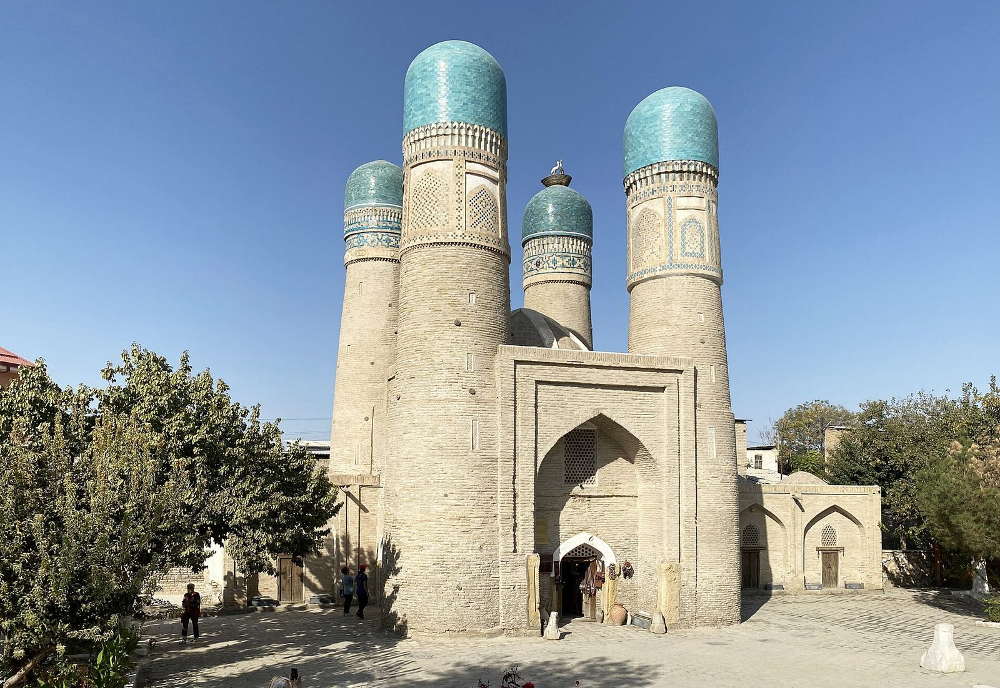
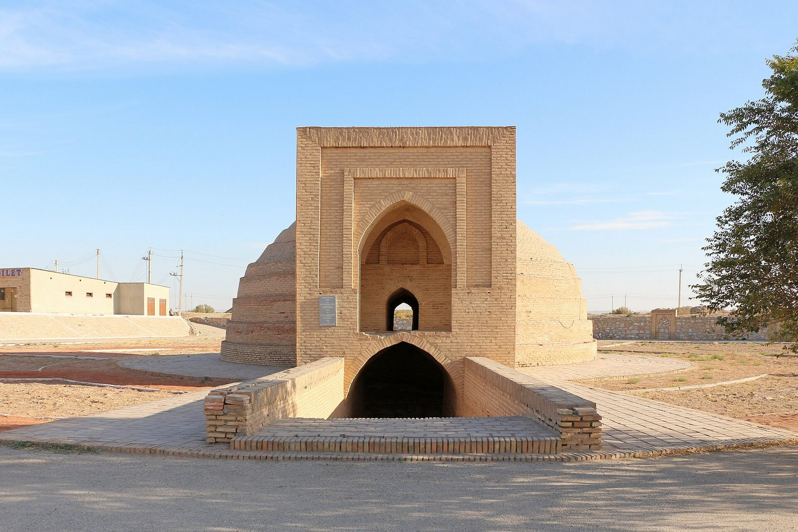
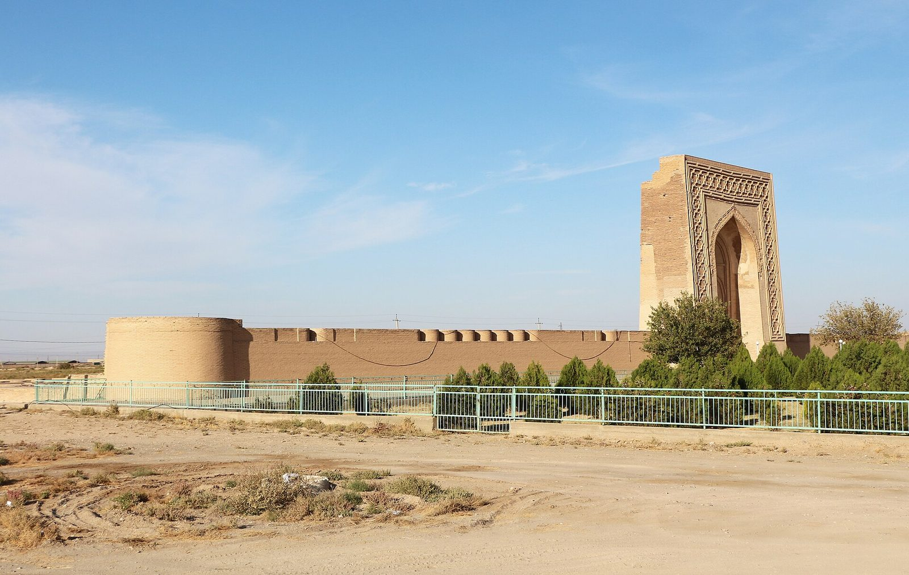
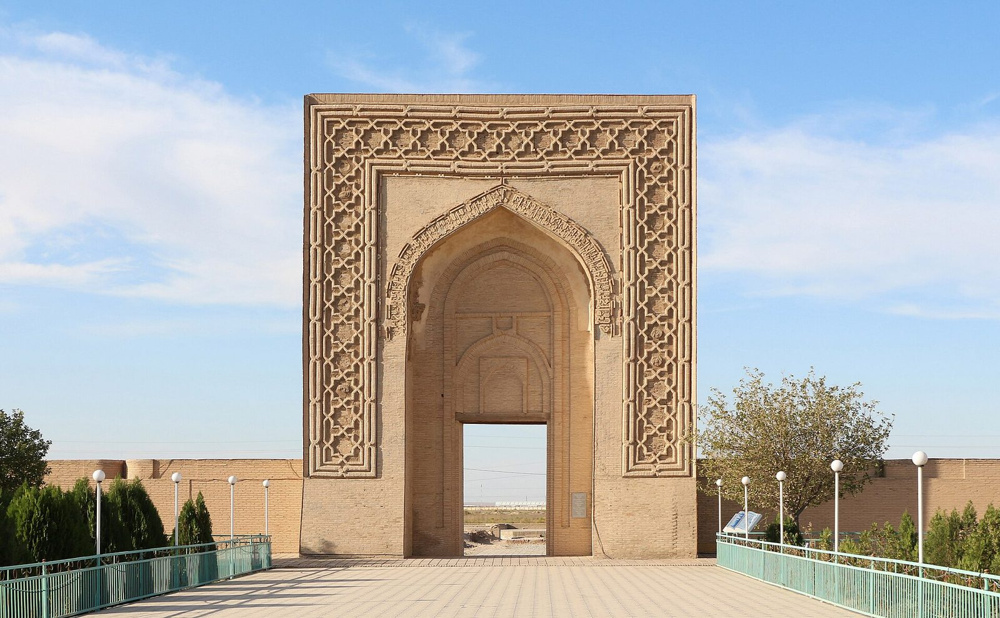
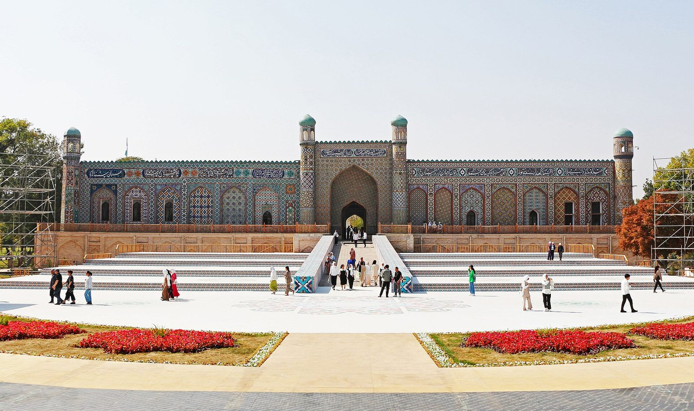

YO‘L QURILISH TEXNOLOGIYASI
Uch asr davomida yo‘lni uchta narsa ushlab turdi: pishiq g‘isht, ganchli qorishma va butun mahalla chiqadigan hashar. Boshqa texnika yo‘q edi.
Har bir xonlikning yo‘li o‘z tabiatiga moslashgan. Xaritadagi nomni bosing.

buxoro-chorminor.jpgXonlikning poytaxti va savdo markazi. Bu yerda yo‘l shahar ichida ham davom etgan: chorraha ustiga savdo gumbazlari qurilgan, karvon esa shahar chetidagi saroylarda to‘xtagan.
Yo‘lda pudratchi ham, smeta ham yo‘q edi. Uning o‘rnida farmon, hashar va vaqf turgan.
Butun texnologiya oltita asbobga tayangan. Asbobni bosing — nima uchun kerakligi chiqadi.
Qatlamni bosing — u qo‘shiladi va nima uchun kerakligi chiqadi.
G‘ishtning o‘lchami tasodifiy emas: yassi va keng g‘isht ravoq terishda qatlamlarni bir-biriga zich bog‘laydi.
Bitta inshootda uch xil qorishma. Material namlik darajasiga qarab tanlangan — bu o‘sha davr muhandislarining aniq hisobi.
Yo‘l to‘rtta inshoot bilan birga tizim bo‘lgan. Belgini bosing.

sardoba.jpgYer osti suv omborisi ustidagi gumbaz. Bahorda to‘plangan suv yozgacha yetgan. Sardobalar yo‘l bo‘ylab zanjir bo‘lib joylashgan: ular orasidagi masofa yo‘nalishning haqiqiy uzunligini belgilagan.

rabot-portal.jpgBuxoro — Samarqand yo‘lidagi Raboti Malik. Devor va peshtoq bugungacha saqlangan. Bunday inshoot bir vaqtning o‘zida karvonsaroy, istehkom va nazorat punkti bo‘lgan.

rabot-devor.jpgAbdullaxon II davrida savdo yo‘llarini obodonlashtirish bo‘yicha keng qamrovli ishlar olib borilgan: butun mamlakat bo‘ylab ko‘plab karvonsaroy, sardoba va ko‘priklar barpo etilgan.
Yo‘l tarixida qurish qanchalik muhim bo‘lsa, saqlash ham shunchalik muhim. Bu davr aynan shuni ko‘rsatadi: ta’mir to‘xtasa, yo‘l bir necha o‘n yilda yo‘qoladi.

qoqon-saroy.jpgUch xonlikning har biri o‘z markazini quradi va o‘z yo‘nalishlarini saqlaydi. Qo‘qon vodiyni bir tizimga bog‘lagan yo‘lning markaziga aylanadi.
Xonliklar davrida yo‘lni eng ko‘p nima buzgan?
Yo‘l bir marta qurilib qo‘yiladigan narsa emas edi. U har yili qayta tiklanadigan tirik tizim bo‘lgan.
Uch asr davomida texnika deyarli o‘zgarmagan. O‘zgargan narsa — kim va qanday miqyosda tashkil qilgani.